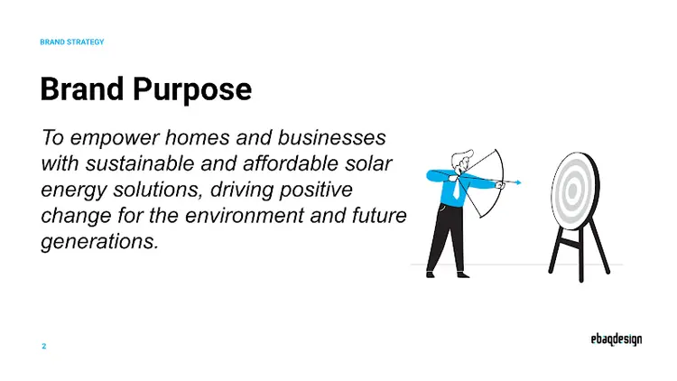
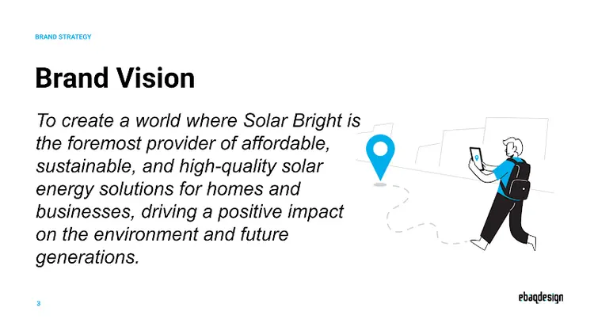
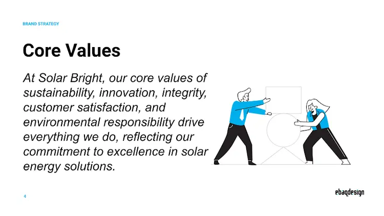
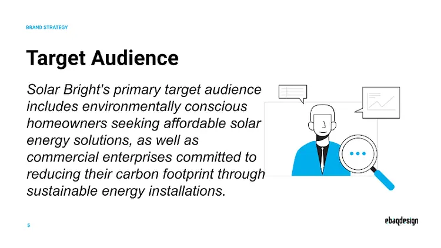
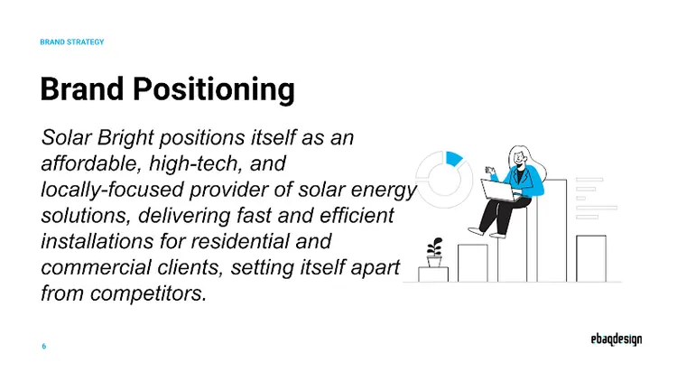
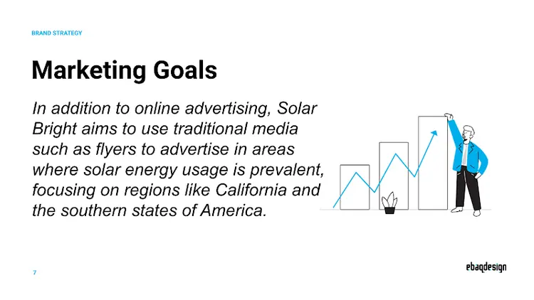
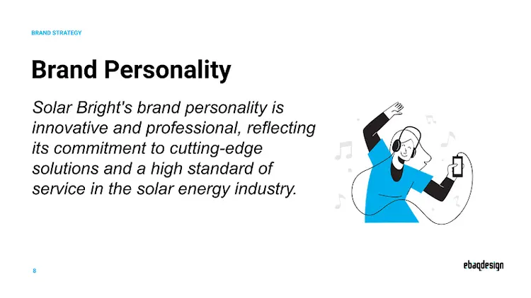
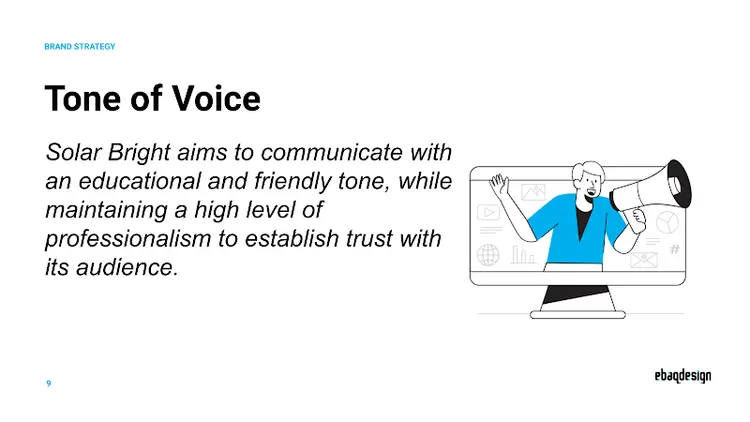
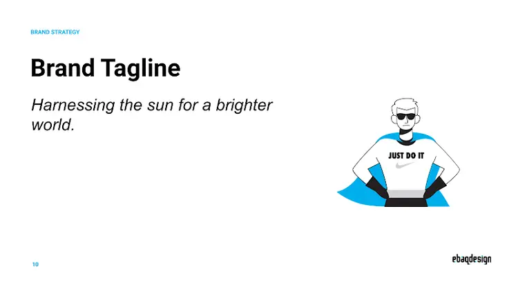

Why Your Solar Company Needs a Brand Strategy
The solar industry has a trust problem. Homeowners are being asked to make a $20,000 to $40,000 purchase from companies they often have never heard of. The sales cycle is long, the product is technical, and many customers have been burned by aggressive door-to-door sales tactics from competitors. In this environment, brand strategy is not a luxury. It is a survival tool.
There are three core challenges that make brand strategy essential for solar companies.
First, there is the trust deficit. Solar is a high-consideration purchase. Customers are inviting your crew onto their roof and committing to a 25-year product relationship. If your brand does not communicate reliability and professionalism from the first touchpoint, you lose the deal before the sales conversation even starts.
Second, there is the commodity perception. Most homeowners see solar panels as interchangeable. They do not understand the differences between manufacturers, inverter technologies, or installation quality. If you cannot articulate why your company is different, customers will default to comparing you on price alone.
Third, the sales cycle is long. From first inquiry to signed contract, most residential solar sales take 30 to 90 days. During that window, your brand needs to stay top of mind and continue building confidence. A strong brand strategy ensures every touchpoint, from your website to your proposal deck to your installation crew's uniforms, reinforces the same message.
Throughout this article, we will reference a brand strategy deck created for Solar Bright, a fictional solar energy company. Each section includes the actual strategy slide so you can see what a finished brand strategy looks like in practice.
Define Your Brand Purpose
Your brand purpose answers the question: Why does your solar company exist beyond generating revenue?
For solar companies, purpose tends to fall into three categories. Some are driven by environmental mission. They believe in accelerating the transition to clean energy and reducing carbon emissions. Others focus on energy independence. They want to free homeowners and businesses from rising utility costs and unreliable grids. And some are driven by community impact. They want to bring affordable energy to underserved areas or create local jobs in the green economy.
The best brand purposes are specific and honest. Saying you want to "save the planet" is too vague to be useful. Saying you want to make solar affordable for middle-income families in the Southeast gives your team something concrete to rally behind.
Your purpose should feel true to why the founders started the company. If it reads like a marketing slogan, it is not digging deep enough.

Notice how Solar Bright's purpose goes beyond just selling panels. It focuses on empowerment and positive change for future generations. That kind of purpose gives the sales team a story to tell and gives customers a reason to choose Solar Bright over a faceless competitor.
Set Your Brand Vision
If purpose is your "why," vision is your "where." It describes the future state your company is working toward. A brand vision should be ambitious enough to inspire but grounded enough to be credible.
For a solar company, your vision might involve becoming the most trusted installer in your region, expanding to serve both residential and commercial markets, or pioneering new financing models that make solar accessible to renters and low-income households.
The key is that your vision gives the brand a direction. It helps your team make decisions about which opportunities to pursue and which to pass on. If your vision is to be the premium provider of residential solar in your state, taking on a low-margin commercial warehouse project might not align.

A good vision statement is something your team can measure progress against. It should be revisited annually and adjusted as the company grows and the market evolves.
Establish Core Values
Core values are the principles that guide your company's behavior when the path is not obvious. In the solar industry, values matter more than in most sectors because customers are trusting you with a major financial decision and access to their home.
The most effective solar company values tend to cluster around a few themes:
- Sustainability is the obvious one. But define what it means operationally. Do you offset the carbon from your installation trucks? Do you recycle old panels? Sustainability should show up in your operations, not just your marketing.
- Innovation signals that you stay current with technology. Customers want to know their installer is recommending the best equipment, not whatever is cheapest or easiest to source.
- Integrity addresses the trust problem directly. It means honest pricing, realistic production estimates, and no high-pressure sales tactics.
- Customer education is a value that separates the best solar companies from the rest. Customers who understand their system become better referral sources and have higher satisfaction rates.
Choose three to five values. Any more than that and they become a list nobody remembers. Each value should influence at least one real business decision.

Identify Your Target Audience
Solar companies serve two broad markets: residential and commercial. Within each, there are distinct audience segments with different motivations, objections, and buying behaviors.
For residential customers, the primary segments include:
- Eco-conscious homeowners who are motivated by environmental impact first and savings second. They tend to be early adopters and are willing to pay more for premium equipment and responsible installation practices.
- Cost-driven homeowners who see solar primarily as a financial investment. They care about payback period, ROI, and monthly savings. They compare multiple quotes and are sensitive to pricing.
- Energy independence seekers who want to reduce their reliance on the grid. They are often interested in battery storage and backup power. Recent power outages or rising utility rates typically trigger their interest.
For commercial customers, motivations include corporate sustainability goals, operational cost reduction, tax incentives, and positive brand perception among their own customers.
The demographics matter too. Solar buyers tend to be homeowners aged 35 to 65 with household income above $75,000. But psychographics are more useful for branding. Understanding whether your ideal customer is a tech enthusiast who wants the latest panels or a practical family looking for long-term savings shapes how you communicate.

Pick your primary audience and design your brand around them. You can serve other segments, but your core messaging should resonate most strongly with one group.
Craft Your Brand Positioning
Positioning defines the space your solar company occupies in the customer's mind. It is the answer to "why should I choose you over the other three companies that quoted me?"
Solar companies typically position themselves along several dimensions:
- Premium vs. affordable. Are you the company that installs the highest-efficiency panels with white-glove service, or the company that makes solar accessible to everyone with competitive pricing and financing?
- Residential vs. commercial. Specialists tend to win over generalists because they can speak directly to a specific audience's concerns.
- Local vs. national. Local companies can emphasize community knowledge, faster response times, and personal relationships. National companies emphasize scale, buying power, and standardized quality.
- Technology-forward vs. service-forward. Some companies lead with cutting-edge equipment and monitoring technology. Others lead with customer experience, warranties, and post-installation support.
Your positioning should fill a gap in your local market. If every competitor in your area is competing on price, positioning as the premium quality option might be the smartest move. If the market is saturated with faceless national brands, positioning as the local expert could be your advantage.

Solar Bright positions itself at the intersection of affordability and technology, with a local focus. That combination creates a clear competitive advantage: the technology of a national brand with the personal service of a local company, at a price that works for middle-income families.
Set Marketing Goals
Your brand strategy needs measurable marketing goals tied to business outcomes. For solar companies, the most important goals typically fall into four categories.
Lead generation is the most obvious. Your brand should drive qualified inbound leads through your website, social media, and referral network. Track cost per lead and lead quality, not just volume.
Education is often overlooked but critical. Solar is a complex purchase. Companies that educate their audience through content marketing, webinars, and community events build trust faster and close deals at higher rates. An educated customer is also less likely to experience buyer's remorse.
Trust building involves accumulating social proof: reviews, case studies, testimonials, and community involvement. Your brand strategy should include a systematic approach to collecting and showcasing these assets.
Referral generation is the most cost-effective growth channel for solar companies. Happy customers who feel connected to your brand will refer friends and family. Your marketing goals should include a target referral rate and a plan to achieve it.

Notice that Solar Bright includes both online and offline channels. For solar companies, local presence still matters. Door hangers in neighborhoods where you have installed systems, sponsorship of community events, and partnerships with local real estate agents can all be part of your marketing mix.
Define Brand Personality
If your solar company were a person, who would they be? Brand personality makes your business relatable and helps your team communicate consistently across every channel.
The most effective solar brand personalities balance three traits:
- Innovative. Customers want to know you are on the cutting edge. You should feel like a company that knows where the industry is heading and is already there.
- Trustworthy. This is non-negotiable in solar. Your personality should communicate reliability, honesty, and follow-through. Every promise you make, you keep.
- Approachable expert. Solar is technical, but your brand should not feel intimidating. The best solar companies feel like a knowledgeable friend who happens to be an expert in energy, not a salesperson pushing a product.
Avoid the trap of being too corporate. Solar customers often prefer brands that feel human and passionate about clean energy over brands that feel like faceless utility companies.

Solar Bright leans into innovation and professionalism. That personality should show up everywhere: in the design of their proposals, the technology they use for site surveys, the uniforms their installers wear, and the way their customer support team handles calls.
Develop Tone of Voice
Tone of voice is how your brand personality translates into actual words. For solar companies, getting tone right is especially important because you need to communicate technical information without overwhelming your audience.
The best solar brand voices are technical but accessible. You should be able to explain net metering, inverter efficiency, and panel degradation rates in language a homeowner can understand without feeling talked down to.
One critical consideration: avoid greenwashing. The solar industry faces scrutiny when companies make vague environmental claims without substance. Your tone should be honest and specific. Instead of "we are saving the planet," say "the average residential installation offsets approximately 4 tons of carbon dioxide per year." Specificity builds credibility.
Define where your brand sits on these spectrums:
- Technical vs. conversational
- Formal vs. friendly
- Urgent vs. patient
- Data-driven vs. story-driven

Document specific examples for common scenarios: how your brand writes a social media post, responds to a negative review, explains a technical concept in a blog post, and follows up after an installation. These concrete examples are far more useful than abstract tone guidelines.
Create a Brand Tagline
A tagline is a concise phrase that captures your brand's core promise. For solar companies, the best taglines communicate both the practical benefit (energy, savings) and the emotional benefit (independence, environmental impact, future).
Good solar taglines tend to be short, memorable, and connected to the bigger picture. They avoid cliches like "going green" or "powered by the sun" unless they put a fresh spin on those ideas.
Your tagline should work across all contexts: on your trucks, in your email signature, on your website hero section, and in radio ads. If it only works in one format, it is too narrow.

Once all these elements are defined, you have a complete brand strategy deck that guides every decision your company makes. From the colors on your website to the script your sales team uses on the phone, everything should trace back to this foundational document.
Key Takeaways
- Trust is everything in solar. Your brand strategy should address the trust deficit head-on through consistent messaging, social proof, and transparency.
- Differentiate beyond price. If your only advantage is cost, you will lose to the next company willing to go lower. Position on value, expertise, or service.
- Pick a primary audience. Residential eco-conscious homeowners need different messaging than cost-driven commercial buyers. Optimize for one.
- Avoid greenwashing. Use specific, verifiable claims about environmental impact. Vague green messaging erodes trust.
- Educate, do not sell. Solar companies that lead with education close more deals and generate more referrals than those that lead with sales pressure.
- Use AI tools like Brand Strategist AI to build a complete strategy deck in minutes, giving your solar company a professional brand foundation from day one.
Build Your Solar Company Brand Strategy
Brand Strategist AI walks you through every step and generates a professional strategy deck automatically. No branding experience needed.
Try Brand Strategist AI FreeFrequently Asked Questions
What should a solar company brand strategy include?
A solar company brand strategy should include your brand purpose, vision, core values, target audience definition, brand positioning, marketing goals, brand personality, tone of voice, and a tagline. These elements work together to build trust, differentiate your company from competitors, and guide all marketing and sales decisions consistently.
How much does it cost to brand a solar company?
Traditional branding agencies charge between $10,000 and $75,000+ for solar company brand strategy and identity work. AI-powered tools like Brand Strategist AI can help you develop a professional brand strategy for a fraction of that cost, making it accessible for solar startups and growing installation companies looking to establish a strong market presence.
How do I differentiate my solar company from competitors?
Differentiation comes from your brand positioning. Focus on what makes your company unique: your installation expertise, financing options, technology partnerships, local market knowledge, customer service approach, or post-installation support. A strong brand strategy helps you identify and communicate these differentiators consistently across all channels, from your website to your sales presentations.
Can I use AI to create a brand strategy for my solar company?
Yes. AI brand strategy tools can guide you through defining your purpose, vision, target audience, positioning, and personality in minutes. The output gives you a professional strategy deck you can use to guide all branding decisions from logo design to sales presentations and marketing campaigns. It is a fast, affordable way to establish a strong brand foundation.